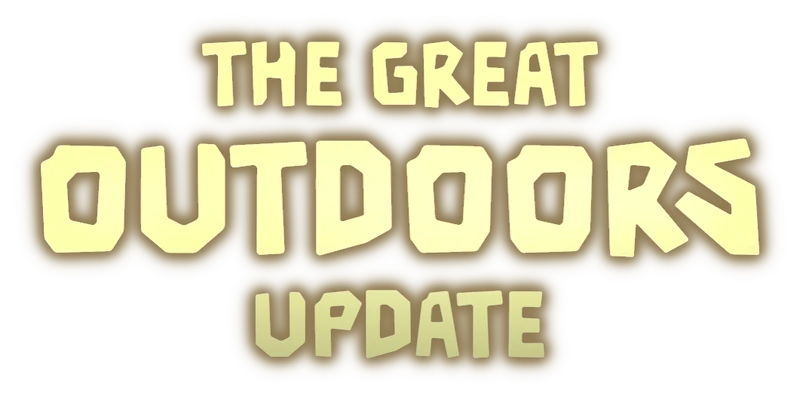

ROBLOX DOORS's having an update
If you're a Roblox Doors' player particularly, and a Robloxian generally, you might have known that LSPLASH's Youtube channel recently posted a trailer of an upcoming update, which is «The Great Outdoors Update».
Well, I'm very excited! So, let's see what is this update about.
Some notably changes
Firstly, the thing which hogs the spotlight is the new subfloor whose name is «The Outdoors». It has a nature theme, like The Greenhouse where its entrance is located.
In The Outdoors, there is an entity named by the community «Groundskeeper», who, in the trailer, appears to be friendly until the player touches grass (I mean, steps on the grass). There are also animals or entities called «Caws», having the same appearance with crows.
Alongside them, we also have these 3 mysterious entities. One of them is this weird plant, which is normally passive but can be enraged, causing some tentacle-like things to emerge (kind of like Snare). The other one is a vine monster which attacks the Groundskeeper at the end of the trailer. The final one, no one has any clue what it is, but the fandom knows that when it arrives, green lightning will be shot on the sky and the ground will violently shake shortly after, similar with Rush (perhaps we need to hide in a closet when it comes).
New update also means new items, the Compass and Lantern are notable ones. Whilst the Compass' usages are unknown, we can easily predict what the Lantern would be used for (producing light of course).
Now you might wonder where could you enter The Outdoors. As I've nentioned, its entrance is located in the Greenhouse. In fact, the vine-covered doors in the Greenhouse are likely The Outdoors' entrances. When you use the Shear on the vines and open the door, there would be a Skeleton door which requires the Skeleton key. Unlock it and you should be in the Outdoors.
In case you couldn't make it to the Greenhouse or just don't want to spend like 45 minutes going to it, you could play it from the Lobby (as well as the Rooms)! It would cost 10 Stardusts, which could be found in subfloors' (may not include the Backdoors) containers. However, until 2025.08.25, going to the Outdoors from the lobby would be free! So remember to play as most as you could!
OK, let's see the other new features, like Saving! Yes, you could save the game. Imagine that you are exhausted progressing the Rooms to get the Barrel of Starlight or in a «Well, that's the problem for another day» situation, you could save the game and you could play that in the next time. At least that's my prediction, I don't really know that if we could save any time we want or not.
And finally, the update would also add skins for the items!
For more information, see The Great Outdoors Update page on DOORS Wiki.
Well, that's all! It is going to be a great and fun update for sure! Anyway, I'm going to make a post to summarise all content of Roblox Doors as of The Great Outdoors Update after it is released several days or more (when I've gathered enough information on Wiki or by playing).
[Credit for The Great Outdoors Update's logo] Original: LSPLASH (Uploaded: Tyomiiix) / DOORS Wiki / «The Great Outdoors Update Logo» / CC BY-SA